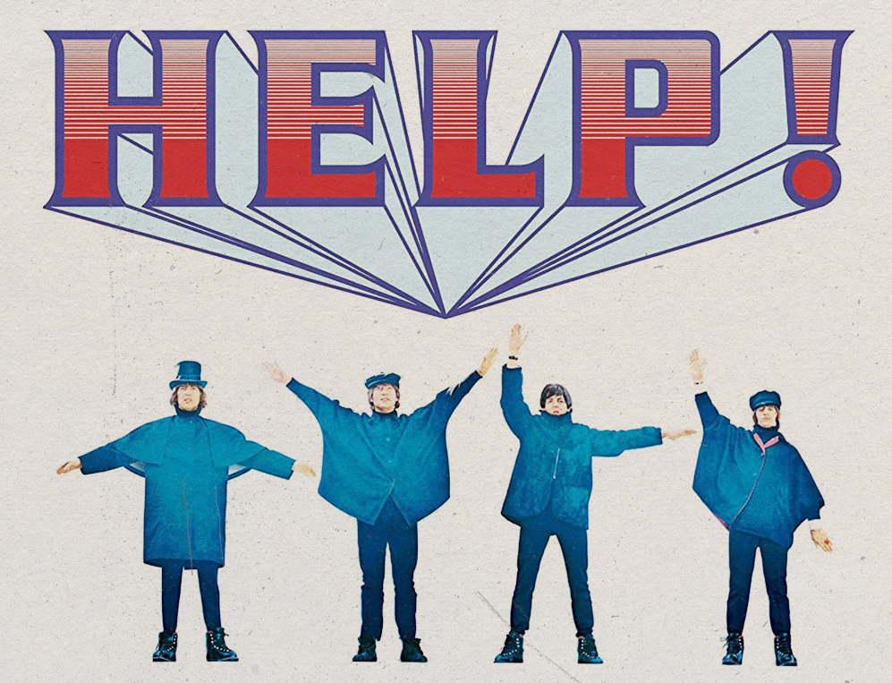
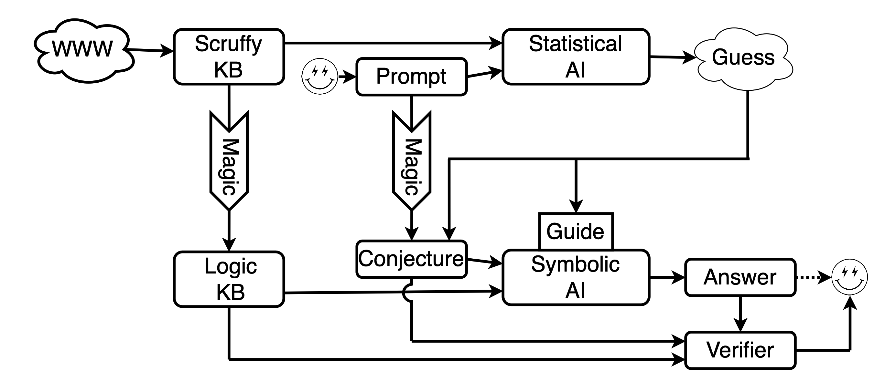
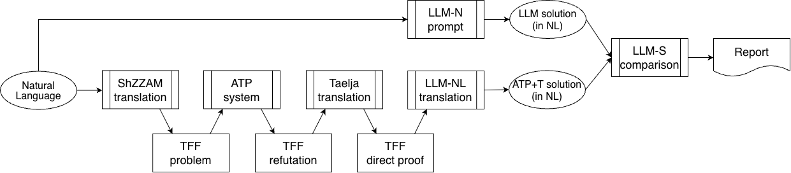

LLM vs. ATP


- LLM-N guesses a natural language answer
- SleighQueen uses logic
- ShZZaM converts the natural language problem to a TFF logic problem
- ATP proves that the problem's conjecture is a theorem (by refutation) in TFF logic
- Taelja converts a TFF logic refutation to a TFF logic proof of the theorem
- LLM-NL converts the TFF logic proof to natural language
- LLM-S compares the two solutions
